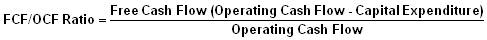
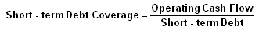
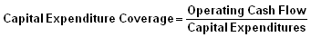
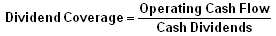
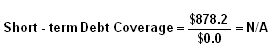
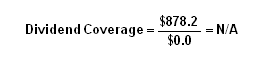
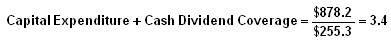
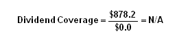
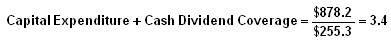

Cash Flow Indicator Ratios: Introduction
This section of the financial ratio tutorial looks at cash flow indicators, which focus on the cash being generated in terms of how much is being generated and the safety net that it provides to the company. These ratios can give users another look at the financial health and performance of a company.
At this point, we all know that profits are very important for a company. However, through the magic of accounting and non-cash-based transactions, companies that appear very profitable can actually be at a financial risk if they are generating little cash from these profits. For example, if a company makes a ton of sales on credit, they will look profitable but haven't actually received cash for the sales, which can hurt their financial health since they have obligations to pay.
The ratios in this section use cash flow compared to other company metrics to determine how much cash they are generating from their sales, the amount of cash they are generating free and clear, and the amount of cash they have to cover obligations. We will look at the operating cash flow/sales ratio, free cash flow/operating cash flow ratio and cash flow coverage ratios.
To find the data used in the examples in this section, please see the Securities and Exchange Commission's website to view the 2005 Annual Statement of Zimmer Holdings.
Cash Flow Indicator Ratios: Operating Cash Flow/Sales Ratio
This ratio, which is expressed as a percentage, compares a company's operating cash flow to its net sales or revenues, which gives investors an idea of the company's ability to turn sales into cash.
It would be worrisome to see a company's sales grow without a parallel growth in operating cash flow. Positive and negative changes in a company's terms of sale and/or the collection experience of its accounts receivable will show up in this indicator.
Formula:
{kind=link}
{kind=link}
As of December 31, 2005, with amounts expressed in millions, Zimmer Holdings had net cash provided by operating activities of $878.2 (cash flow statement), and net sales of $3,286.1 (income statement). By dividing, the equation gives us an operating cash flow/sales ratio of 26.7%, or approximately 27 cents of operating cash flow in every sales dollar.
Variations:
None
Commentary:
The statement of cash flows has three distinct sections, each of which relates to an aspect of a company's cash flow activities - operations, investing and financing. In this ratio, we use the figure for operating cash flow, which is also variously described in financial reporting as simply "cash flow", "cash flow provided by operations", "cash flow from operating activities" and "net cash provided (used) by operating activities".
In the operating section of the cash flow statement, the net income figure is adjusted for non-cash charges and increases/decreases in the working capital items in a company's current assets and liabilities. This reconciliation results in an operating cash flow figure, the foremost source of a company's cash generation (which is internally generated by its operating activities).
The greater the amount of operating cash flow, the better. There is no standard guideline for the operating cash flow/sales ratio, but obviously, the ability to generate consistent and/or improving percentage comparisons are positive investment qualities. In the case of Zimmer Holdings, the past three years reflect a healthy consistency in this ratio of 26.0%, 28.9% and 26.7% for FY 2003, 2004 and 2005, respectively.
Cash Flow Indicator Ratios: Free Cash Flow/Operating Cash Flow Ratio
The free cash flow/operating cash flow ratio measures the relationship between free cash flow and operating cash flow.
Free cash flow is most often defined as operating cash flow minus capital expenditures, which, in analytical terms, are considered to be an essential outflow of funds to maintain a company's competitiveness and efficiency.
The cash flow remaining after this deduction is considered "free" cash flow, which becomes available to a company to use for expansion, acquisitions, and/or financial stability to weather difficult market conditions. The higher the percentage of free cash flow embedded in a company's operating cash flow, the greater the financial strength of the company.
Formula:

{kind=link}
Components:
{kind=link}
As of December 31, 2005, with amounts expressed in millions, Zimmer Holdings had free cash flow of $622.9. We calculated this figure by classifying "additions to instruments" and "additions to property, plant and equipment (PP&E)" as capital expenditures (numerator). Operating cash flow, or "net cash provided by operating activities" (denominator), is recorded at $878.2. All the numbers used in the formula are in the cash flow statement. By dividing, the equation gives us a free cash flow/operating cash flow ratio of 70.9%, which is a very high, beneficial relationship for the company.
Variations:
A more stringent, but realistic, alternative calculation of free cash flow would add the payment of cash dividends to the amount for capital expenditures to be deducted from operating cash flow. This added figure would provide a more conservative free cash flow number. Many analysts consider the outlay for a company's cash dividends just as critical as that for capital expenditures. While a company's board of directors can reduce and/or suspend paying a dividend, the investment community would, most likely, severely punish a company's stock price as a result of such an event.
Commentary:
Numerous studies have confirmed that institutional investment firms rank free cash flow ahead of earnings as the single most important financial metric used to measure the investment quality of a company. In simple terms, the larger the number the better.
Cash Flow Indicator Ratios: Cash Flow Coverage Ratios
This ratio measures the ability of the company's operating cash flow to meet its obligations - including its liabilities or ongoing concern costs.
The operating cash flow is simply the amount of cash generated by the company from its main operations, which are used to keep the business funded.
The larger the operating cash flow coverage for these items, the greater the company's ability to meet its obligations, along with giving the company more cash flow to expand its business, withstand hard times, and not be burdened by debt servicing and the restrictions typically included in credit agreements.
Formulas:
  {kind=link}
{kind=link}
{kind=link}
{kind=link}
Components:
{kind=link}
 



{kind=link}
{kind=link}
As of December 31, 2005, with amounts expressed in millions, Zimmer Holdings had no short-term debt and did not pay any cash dividends. The only cash outlay the company had to cover was for capital expenditures, which amounted to $255.3 (all numbers for the cash flow coverage ratios are found in the cash flow statement), which is the denominator. Operating cash is always the numerator. By dividing, the operative equations give us a coverage of 3.4. Obviously, Zimmer is a cash cow. It has ample free cash flow which, if the FY 2003-2005 period is indicative, has steadily built up the cash it carries in its balance sheet.
Variations:
None
Commentary:
The short-term debt coverage ratio compares the sum of a company's short-term borrowings and the current portion of its long-term debt to operating cash flow. Zimmer Holdings has the good fortune of having none of the former and only a nominal amount of the latter in its FY 2005 balance sheet. So, in this instance, the ratio is not meaningful in the conventional sense but clearly indicates that the company need not worry about short-term debt servicing in 2006.
The capital expenditure coverage ratio compares a company's outlays for its property, plant and equipment (PP&E) to operating cash flow. In the case of Zimmer Holdings, as mentioned above, it has ample margin to fund the acquisition of needed capital assets. For most analysts and investors, a positive difference between operating cash flow and capital expenditures defines free cash flow. Therefore, the larger this ratio is, the more cash assets a company has to work with.
The dividend coverage ratio provides dividend investors with a narrow look at the safety of the company's dividend payment. Zimmer is not paying a dividend, although with its cash buildup and cash generation capacity, it certainly looks like it could easily become a dividend payer.
For conservative investors focused on cash flow coverage, comparing the sum of a company's capital expenditures and cash dividends to its operating cash flow is a stringent measurement that puts cash flow to the ultimate test. If a company is able to cover both of these outlays of funds from internal sources and still have cash left over, it is producing what might be called "free cash flow on steroids". This circumstance is a highly favorable investment quality.
Cash Flow Indicator Ratios: Dividend Payout Ratio
This ratio identifies the percentage of earnings (net income) per common share allocated to paying cash dividends to shareholders. The dividend payout ratio is an indicator of how well earnings support the dividend payment.
Here's how dividends "start" and "end." During a fiscal year quarter, a company's board of directors declares a dividend. This event triggers the posting of a current liability for "dividends payable." At the end of the quarter, net income is credited to a company's retained earnings, and assuming there's sufficient cash on hand and/or from current operating cash flow, the dividend is paid out. This reduces cash, and the dividends payable liability is eliminated.
The payment of a cash dividend is recorded in the statement of cash flows under the "financing activities" section.
Formula:
Components:{kind=link}
Note:
Zimmer Holdings does not pay a dividend. An assumed dividend amount, as of December 31, 2005, is provided to illustrate the ratio's calculation:
|
0.80 ÷ 2.96 = 27% |
The numerator (annual report or Form 10-K) represents the annual dividend per share paid in cash and the denominator (income statement) represents the net income per share for FY 2005.
Variations:
In another version of the dividend payout ratio, total amounts are used rather than per share amounts. Nevertheless, an investor should arrive at the same ratio percentage.
Note: In the U.K. there is a similar dividend payout ratio, which is known as "dividend cover". It's calculated using earnings per share divided by dividends per share.
Commentary:
Our first observation states the obvious - you only use this ratio with dividend-paying companies. Investors in dividend-paying stocks like to see consistent and/or gradually increasing dividend payout ratios. It should also be noted that exaggerated (i.e. very high) dividend ratios should be looked at skeptically.
The question to ask is: Can the level of dividends be sustained? Many investors are initially attracted to high dividend-paying stocks, only to be disappointed down the road by a substantial dividend reduction (see remarks below). If this circumstance happens, the stock's price most likely will take a hit.
Secondly, dividend payout ratios vary widely among companies. Stable, large, mature companies (i.e. public utilities and "blue chips") tend to have larger dividend payouts. Growth-oriented companies tend to keep their cash for expansion purposes, have modest payout ratios or choose not to pay dividends.
Lastly, investors need to remember that dividends actually get paid with cash - not earnings. From the definition of this ratio, some investors may assume that dividend payouts imply that earnings represent cash, however, with accrual accounting, they do not. A company will not be able to pay a cash dividend, even with an adequate unrestricted balance in retained earnings, unless it has adequate cash.
In view of this accounting treatment of dividends, it is incumbent upon investors to check a company's dividend payout ratio against an adequate margin of free cash flow to ensure that the payout percentage (ratio) is sustainable.
Proceed to the next chapter on Investment Valuation Ratios here.